2,5 – 4,0 ton
5,0 – 10,0 ton
0,5 - 1,2 м3
1.5 - 2,5 м3
Висота підйому -5200m
Висота підйому -7200m

Вантажо-підйомність -4т
Вантажо-підйомність -5т
висота підйому -5 м
висота підйому -12 м
Мах зусилля зриву -100 тон
Мах діаметр колеса -3650мм
Автонавантажувачі спеціального призначення
| Зоображення | Назва | Зоображення | Назва |
|---|---|---|---|
| Вилкові навантажувач | |||
| 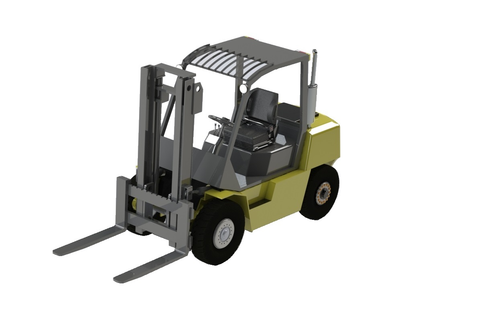 | Вантажо-підйомність 2,5 – 4,0 ton |
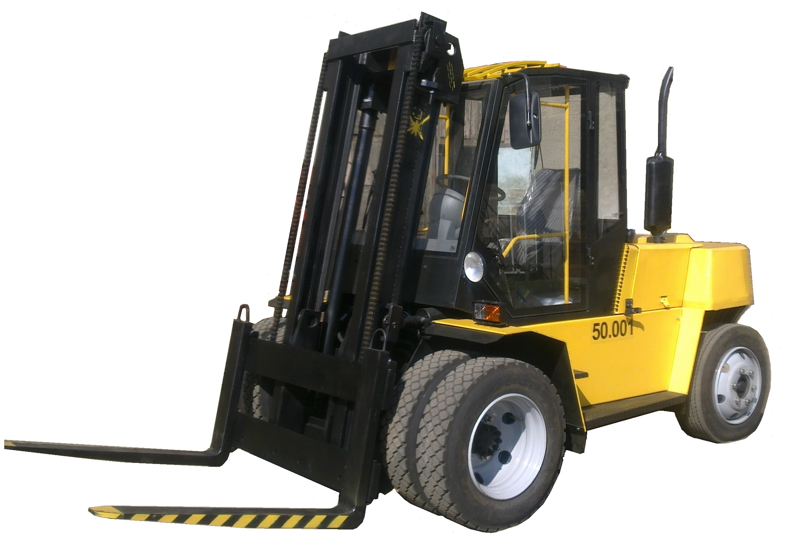 | Вантажо-підйомність 5,0 – 10,0 ton |
| Ковшеві навантажувачі | |||
| 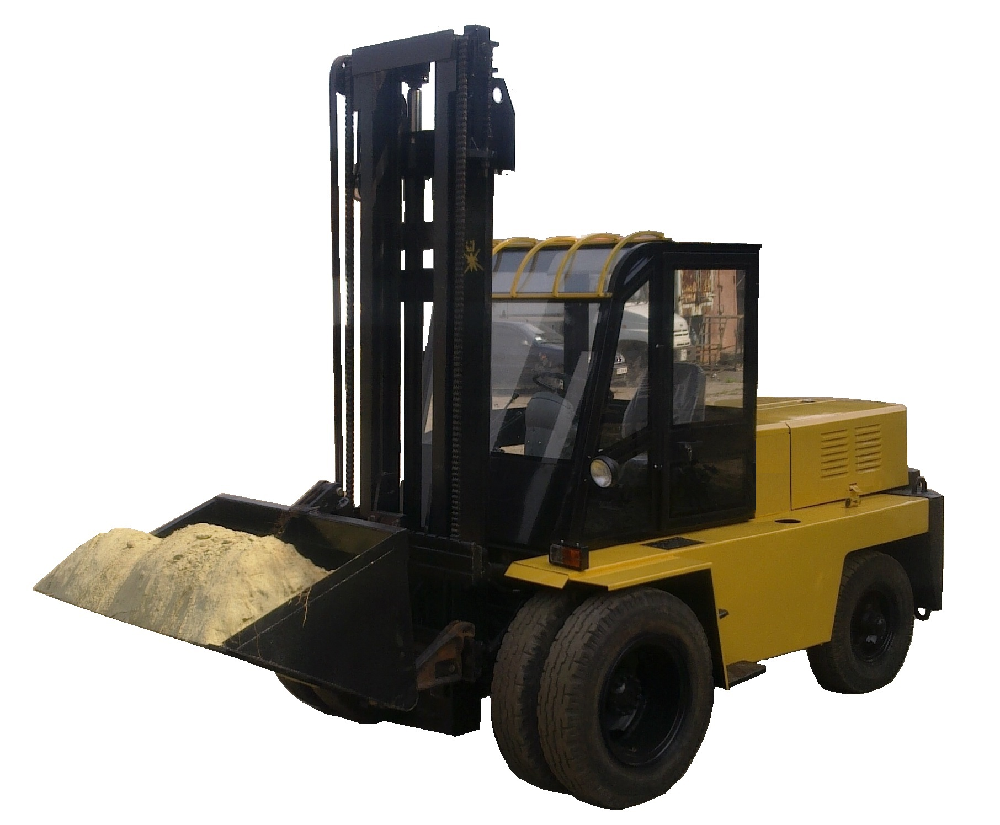 | Об’єм ковша - 0,5 - 1,2 м3 |
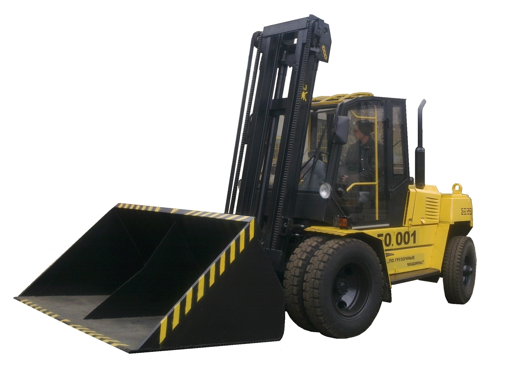 | Об’єм ковша – 1.5 - 2,5 м3 |
| Навантажувачі з телескопічною стрілою | |||
| 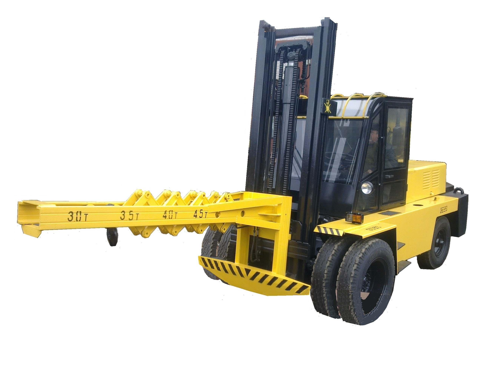 | Виліт гаку -2850; Висота підйому -5200m |
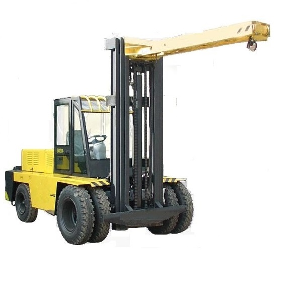 | Виліт гаку -2850; Висота підйому -7200m |
| Навантажувачі для круглого лісу | |||
|
Площа захвату (max) - 1,2м2 Вантажо-підйомність -4т |
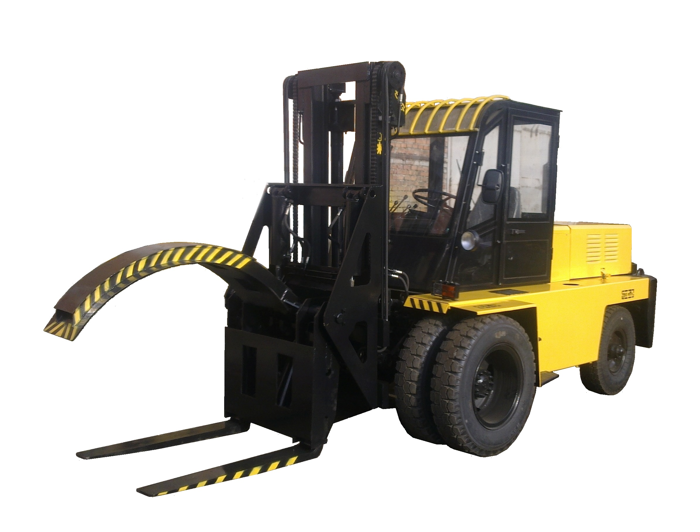 | Площа захвату (max) - 1,5м2 Вантажо-підйомність -5т |
| Навантажувачі для довгомірних вантажів і контейнерів | |||
| 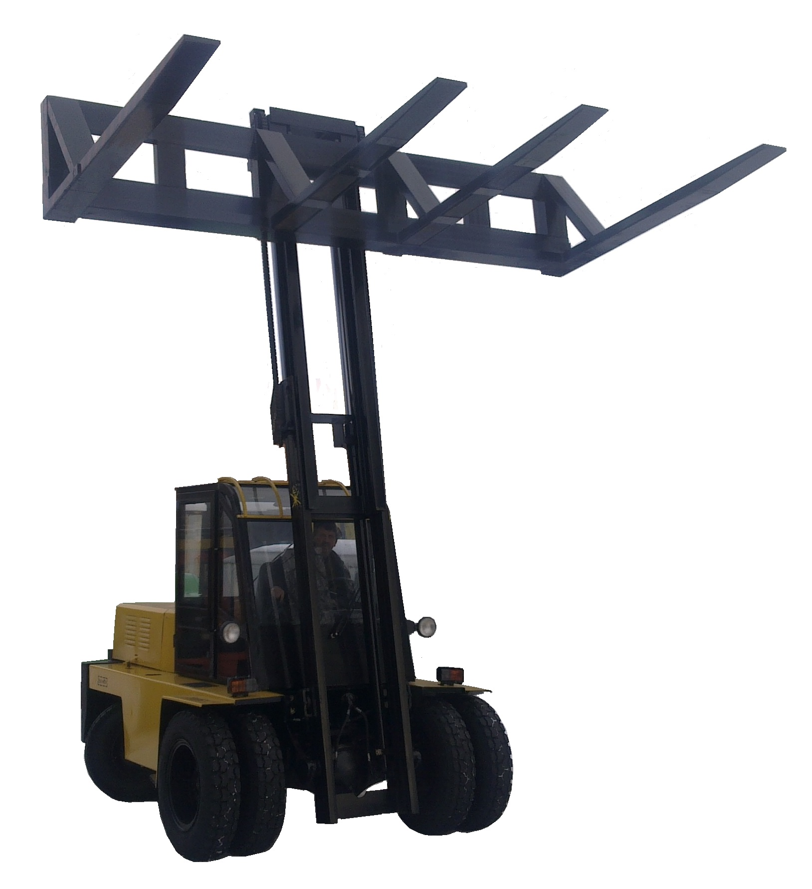 | Довжина вантажу – 9м, висота підйому -5 м |
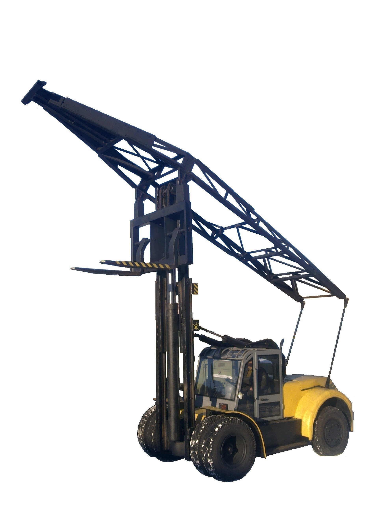 | Довжина вантажу - 12м, висота підйому -12 м |
| Навантажувачі роторознімачі та колесознімачі | |||
| 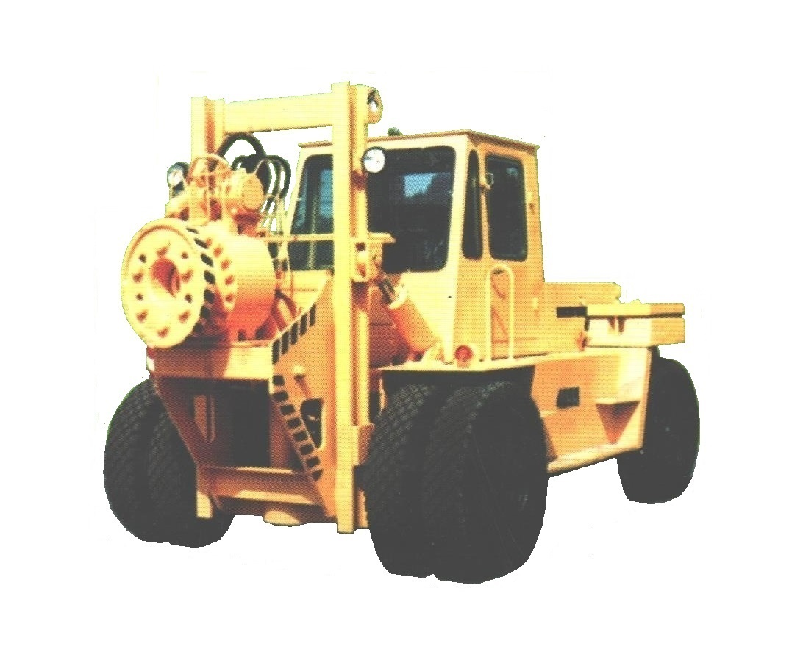 | Для зняття ротора млина Мах зусилля зриву -100 тон |
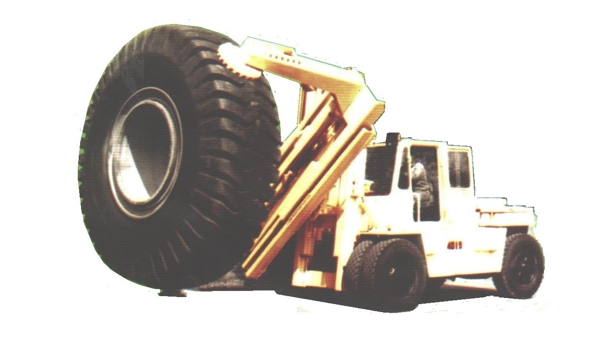 | Для монтажу коліс самоскидів 80, 120, 180 тон Мах діаметр колеса -3650мм |
| Повнопривідні навантажувачі | |||
| 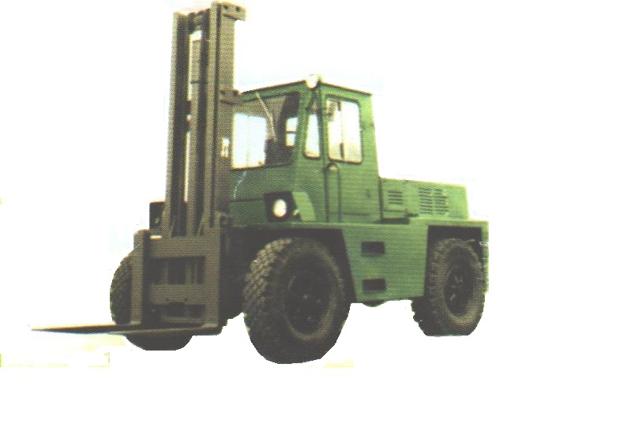 | Повнопривідні навантажувачі для армії | 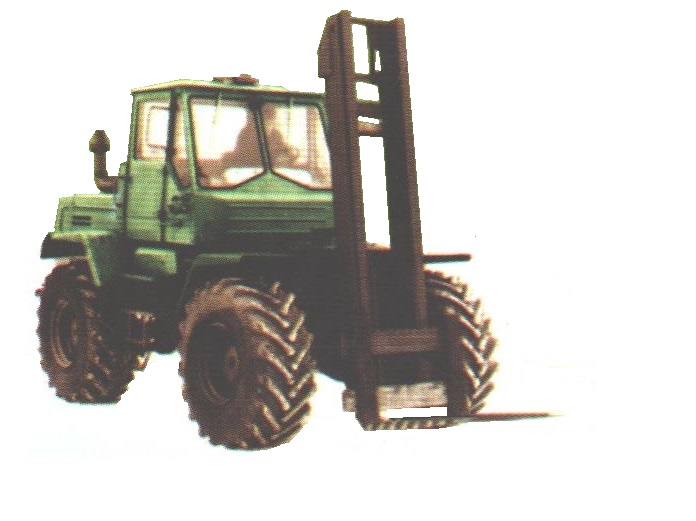 | Повнопривідні навантажувачі для сільського господарства |